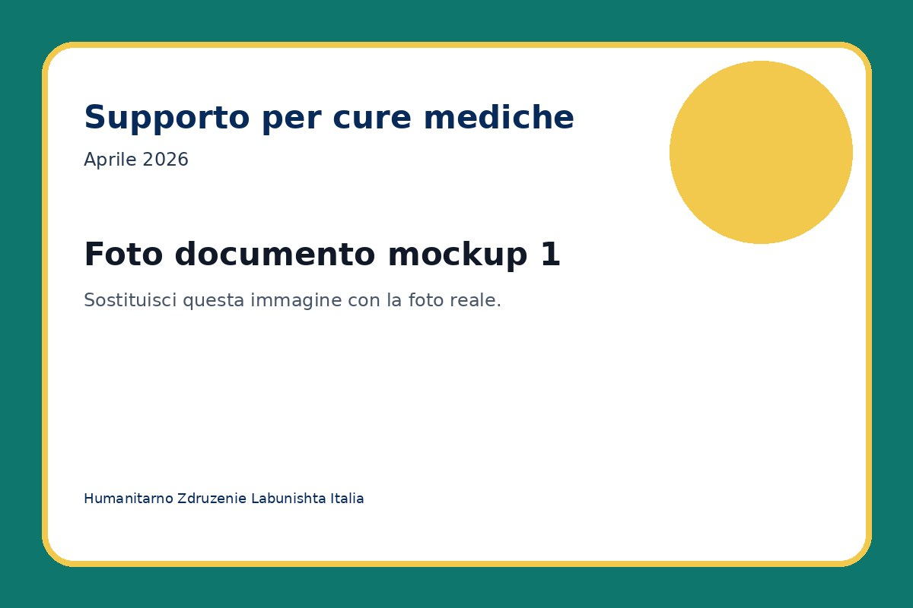
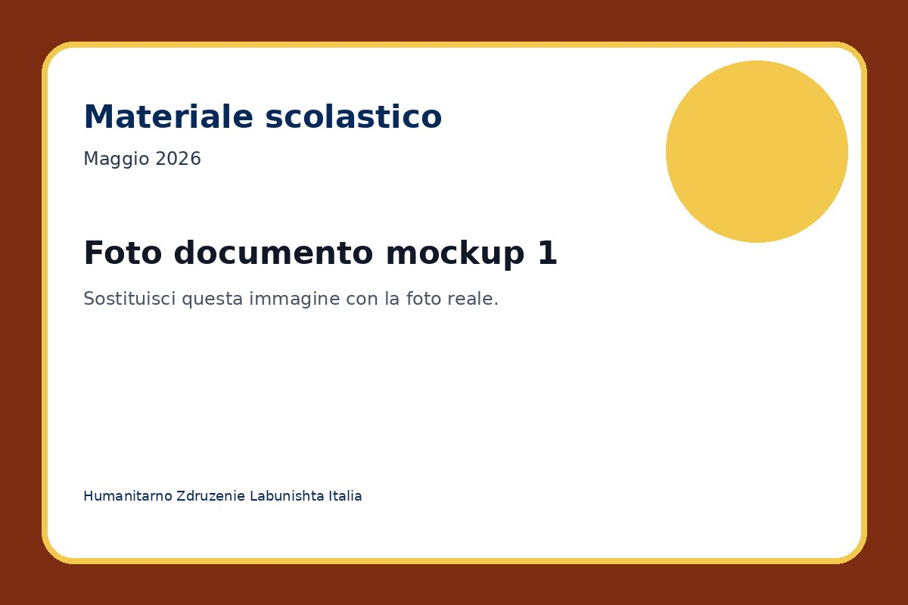

Conclusa
Distribuzione pacchi alimentari
Consegna di pacchi alimentari e beni essenziali a famiglie in difficoltà.
Visualizza progettoArchivio dei progetti conclusi o in corso, con foto, relazioni finali e documentazione scaricabile.
Consegna di pacchi alimentari e beni essenziali a famiglie in difficoltà.
Visualizza progetto
Raccolta fondi per sostenere spese mediche urgenti e documentate.
Visualizza progetto
Acquisto e consegna di zaini, quaderni e materiale scolastico.
Visualizza progetto
Distribuzione alimentare durante il mese di Ramadan.
Visualizza progetto